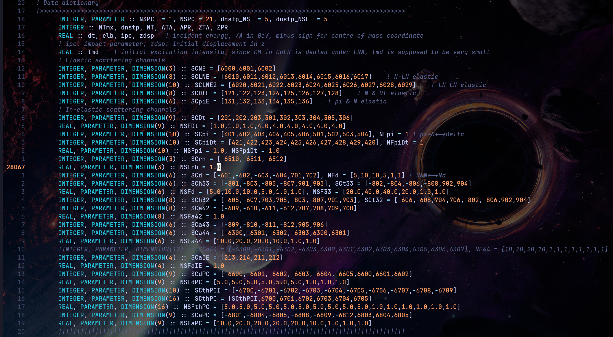

关于CuLH这个代码的一些注释。我整理了两个源代码分别是CuLH_box.cuf和CuLH_fireball.cuf，代表box计算和火球计算，分别都包含了完整的计算轻核的chanel。这两个代码的区别如下：1
2
3
4
5
6
7
8
9! 计算的chanel不一样，fireball多了SCpiDt和599两个关于共振态的过程
INTEGER, DIMENSION(NSPC) :: SPC = [SCpi,SCpiDt,SCdPC, SCthPC, SCaPC,599], SPCR, od ! fireball ->res d t he3 he4
INTEGER, DIMENSION(NSPC) :: SPC = [SCpi,SCdPC,SCthPC,SCaPC], SPCR, od ! box -> d t he3 he4
! 初始化函数不一样：
CALL INIT_hydro(NTmx,dt,3.0,0)
CALL INITNM_Bzm_free2
! 周期性边界条件不一样，一个开一个关，BOX size不一样
INTEGER, PARAMETER :: PBC = 0 ! 1 for periodic condiditon
INTEGER, PARAMETER :: mxx = 10, mxz = 10, mxpx = 4, mxpz = 4
怎么run
fortran的cuda代码需要nvfortran编译器，组里服务器安装的有，不建议自己本地配置。首先登录到组里服务器，然后切换到gpu的节点：1
2
3
4
5
6
7ssh -Y gpufarm211
## 输自己的密码，这个节点有五张GPU,nvidia-smi
## 编译命令
nvfortran CuLH.cuf ## 会出来一个a.out可执行文件
## 运行
echo 0 | ./a.out >> output &
## 上面这步是用编号为0的gpu来计算并将结果保存到output文件内，避免输出到屏幕。
编译确保自己的当前目录里有后缀为cuf的源文件代码，运行确保当前目录有input文件SP-IN.dat。
chanel
首先定位到代码最后的主函数。
代码的各种Chanel用数组来记录，比如SCpi，表示piN到delta的chanel，包含了10个chanel，具体的过程通过具体的元素可以搜索到。然后将要计算的chanel添加到SPC这个数组：1
INTEGER, DIMENSION(NSPC) :: SPC = [SCpi,SCdPC,SCthPC,SCaPC], SPCR, od ! 这四个chanel分别是piN->delta,delta+N->pi+d, delta+NN->pi+t/he3,以及he4.
最后在主函数开始的地方，修改NSPC这个参数，值等于所有chanel的数量之和，比如上面的box计算轻核的chanel，就是10+9+16+9=44

box计算
几个重要的函数：1
2
3
4
5
6
7
8
9
10
11
12
INTEGER, PARAMETER :: PBC = 0 !line:4425. 1 for periodic condiditon
INTEGER, PARAMETER :: mxx = 10, mxz = 10, mxpx = 4, mxpz = 4 !line:4434. box size
CALL INITNM_Bzm_free2 !line:28159 初始化box的函数，里面可以修改sample粒子的数目，这个数目是乘以test particle的数目，比如想初始化480个pi0，主函数里test particle是100，这个函数里pi0就是48000。
CALL yld(-0.5) !line:28200 是否对最后的产额结果统计rapidity的cut，加个负号表示不作任何cut，0.5表示取快度在+-0.5之间。
SUBROUTINE SPC4PClcl_d !line:18392. 这个函数的最后，在所有-68的case下可以给he4的prb乘以一个因子增大统计量。
SUBROUTINE SPC3PClcl_d !line:17847. 同理这个函数给triton/he3增大prb。
fireball 计算
fireball的计算为了不让delta跑出fireball外面，需要增大box的size。1
2CALL INIT_hydro(NTmx,dt,3.0,0) !计算fireball的初始化程序。参数分别是总步长，dt，快度cut，是否读取轻核。
NE = 8000; NTmx = 500; dnstp = 500; dt = 0.1 !这一行第一个参数是test particle数目，第二个是步数，第三个决定多少步输出一次相空间数据，第四个dt。
output
主要看CuLH_yld.dat这个文件，分别是dt,p,n,delta++,delta+,delta0,delta-,pi+,pi0,pi-,d,he3,t,he4,he41st, he42st, he43st
rp0000.dat是初态分布，rp0500.dat是末态分布。